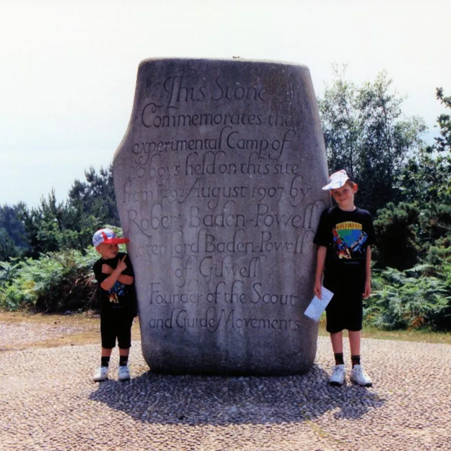
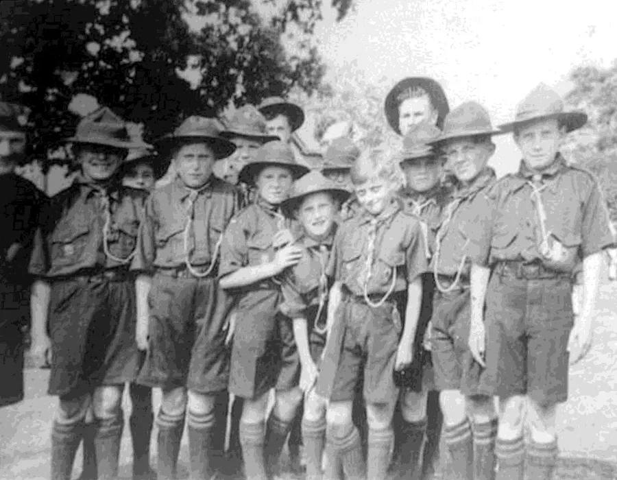
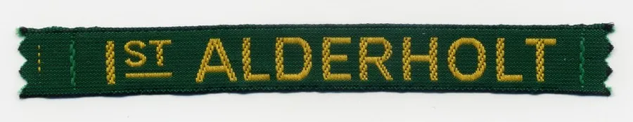
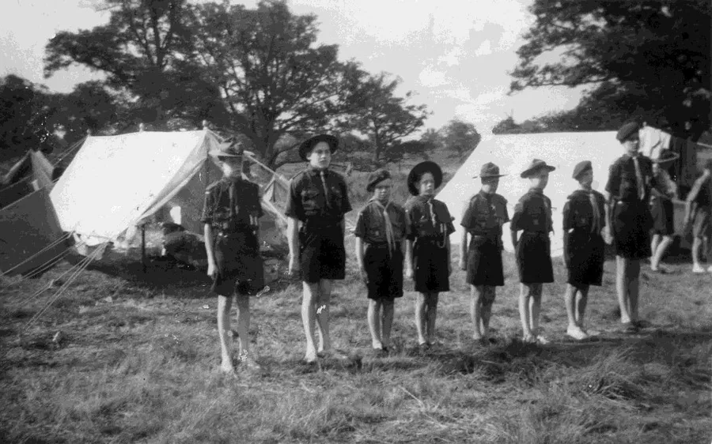
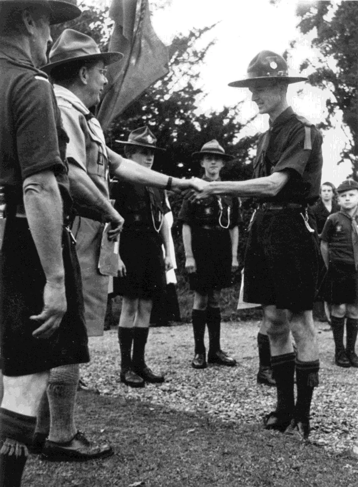
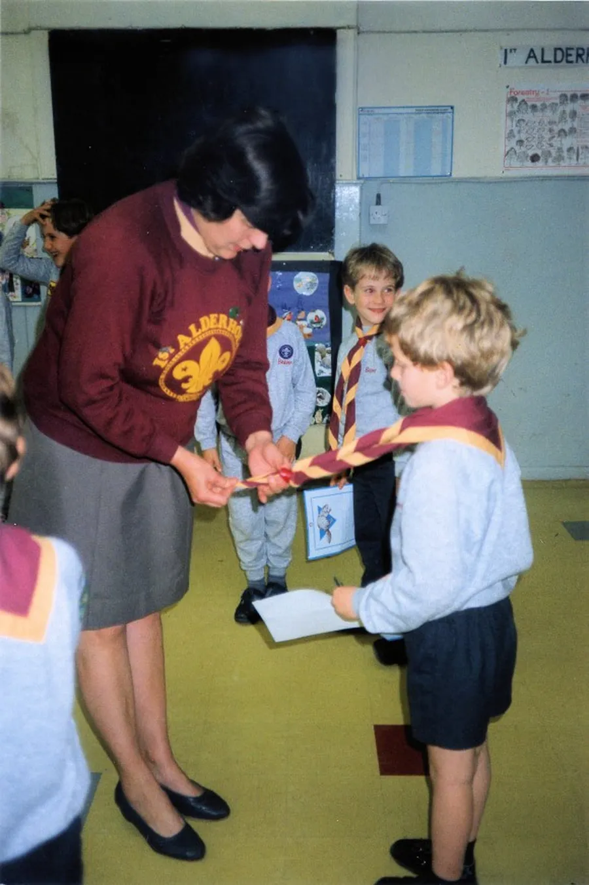

1st Alderholt Scout Group
The Early Years
by Adrian King

The Brownsea Island Scout camp was the site of a boys' camping event on Brownsea Island in Poole Harbour organised by Lieutenant-General Baden-Powell to test his ideas for the book Scouting for Boys. Boys from different social backgrounds participated from 1st to 8th August 1907 in activities around camping, observation, woodcraft, chivalry, lifesaving, and patriotism. The event is regarded as the origin of the worldwide Scout movement.
Alderholt was quick to start its own troop. By June 1914 St. James Church and Cripplestyle Congregational Chapel were forming groups of Boy Scouts. By June 1915 1st Alderholt B. P. Scouts were meeting with other recently formed groups in the district.

By kind permission of the Earl of Shaftesbury they met in the grounds of St. Giles House. An eyewitness describes the event
“The morning was spent in an exciting scouting game and after eating our dinners in the Rectory Garden we went over part of St. Giles House.
We then had some sports in the park and marched to the schools where a splendid tea was given by some friends of the District Scoutmaster the Rev. J. A. Bouquet, to whom much of the success of the day was due.
The various troops performed some short sketches and we all returned home about 6.30 pm.”
In 1915 2nd Class Badges were being awarded to Patrol Leaders Hayter and Sid Raison and Second Green Patrol Scouts, Bracher, Bartlett and S. Philpot. Sid Raison left to go to London in August 1915 and his place as leader of the 'Wood-Pigeon' Patrol was taken by scout Percy Palmer. Sid Raison was later to return as Scoutmaster in the 1950’s.

Badges were awarded to Patrol Leader P. Palmer and Scouts Gaiger, H. Shearing, J. Hayter, Bracher, S. Philpot.
It appears that the Troop did not survive the First World War but was formed again by Rev. H. H. Coley in the early 1920’s. He stated his intentions in the parish news of July 1922, “I am willing if the numbers are large enough to justify it to start a Scout Troop for the boys…”
A concert in aid of the Scout Troop Fund was arranged for January 1928 and the Rev. F. W. Aldous said “If a nice trim scout comes round to your house, do buy a ticket from him. You will please him and at the same time will help the troop and I believe the troop is going to be a real asset to your village.”

In December 1927 Major Stilwell allowed the Rev. F. W. Aldous to hold Alderholt Scout Troop meetings in the Park Mission Hall. John Curtis was told that his uncle Douglas Curtis was a cub and met in the building in 1930.
Then followed another period when there was no Scout Group in the village but it was reformed in September 1953. The new Scout Troop was formed by District Scout Leader, Arthur King, and Sid Raison who was now living at Cripplestyle and had offered to become Scout Master.
John Curtis said that he
“Had heard whispers amongst the choir boys at St. James that six had been chosen to form the first six in the Scout Troop ... and had found out that this was to be after the next Choir practice.
"I decided that I wanted some of this, and that I was not going to be left out. Arthur King and his family lived in Church Farm, next to the old village school …
When choir practice finished I waited and observed the six leaving and making their way 100 yards down the road. I waited 10 minutes or so and followed, banging on Mr. King’s door. When the door was answered I said that I wanted to join the scouts. He said, ‘you had better come in then.’"
John would not be eleven until November but my dad allowed him to join.

John Curtis continues
"Our meeting place was in the old primary school … we progressed through our Tenderfoot and Second-Class Scout Badges and also obtained Proficiency Badges.
"During the summer months we held our meetings in Alderholt Park …
We called this area the parade ground, where we erected a rustic flagpole. Several weekend camps were held at Hill Farm …
We had to sleep in an old bell tent, heads to the outside wall and feet to the centre pole. Sid taught us to hollow out a hole each, big enough to accommodate our hip bone. Once the ground sheets were in position it was very difficult to find these holes again as no sleeping bags in those days just blankets pinned together."We spent a most uncomfortable and cold couple of nights at this first camp and toilets were some hessian attached to poles with a dug hole to go to number one and a horizontal pole suspended over a dug pit which we had to sit on to go to number two.
"Things were very frugal at that time. I remember vividly the lumpy porridge and the very tasty stew cooked over a wood fire.
"Our first week camp was at Tiptoe near New Milton. The owner kept pigs and you could always smell the waste food being boiled up to feed them. These were happy days.
"Arthur King eventually left and was tasked by the then District Commissioner Jimmy James to start up a Scout Troop in Cranborne eventually called 'Lord Cranborne’s Own'.”

There was another period when there wasn’t a Scout Group in the village. The Scout Group was reformed again in 1983 after a group of parents decided that they wanted their sons to have the opportunity to participate in Scouting. Inevitably therefore it was from parents that the first leaders were recruited. On 9th Sept 1983 twelve expectant boys and three very nervous and inexperienced leaders gathered under the guidance of the experienced leader of the Cranborne pack — Esme Isaacs — for the first cub pack meeting.

Christine Hensel writes in 1999
“As the cub pack grew leaders and boys were busy also forming the Beaver Colony (1987), Scout, and Venture Scout Units over the next few years so that up to 80 boys at a time and their leaders had been Scouting in Alderholt during this period. In the late 1980’s Alderholt was the only group in the district to have all four sections represented in the Group, a fact of which we were justly proud.”
Christine Hensel was Cub Pack Baloo from 1983 to 1998 and Pat Gilbert was Group Scout leader from 1993 to 2005 — a position which Sheenagh Bradford now occupies.
1st Alderholt Six — 1953
- Fred Jerrard
- Barry Wallis
- Terrence Wallis
- Robert Raison
- Len York
- Tom Lane?
- and John Curtis.